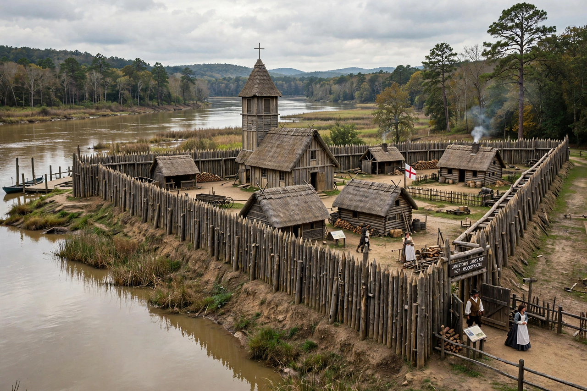

| Jamestown, Virginia | |
 Reconstructed James Fort, Jamestown | |
| Founded | 14 May 1607 |
|---|---|
| Founded by | Virginia Company of London |
| Named for | King James I of England |
| Role | Capital of the Colony of Virginia, 1607–1699 |
Jamestown was the first permanent English settlement in the Americas. Established by the Virginia Company of London on 14 May 1607 on a marshy peninsula (now an island) in the James River, it served as the capital of the Colony of Virginia for 92 years, until the seat of government moved to Williamsburg in 1699.
The expedition of 104 men and boys arrived aboard the Susan Constant, Godspeed, and Discovery, choosing the site for its deep-water anchorage and defensibility — though its brackish water and mosquitoes made it unhealthy. Relations with the Powhatan Confederacy alternated between trade and war. The winter of 1609–1610, the "Starving Time", reduced the colonists from about 500 to some 60 survivors; archaeological evidence of cannibalism during the famine was published in 2013.
John Rolfe's cultivation of a sweet Caribbean tobacco variety from about 1612 gave the colony a profitable export and drove an insatiable demand for land and labour. In 1619 the first representative assembly in English America, the House of Burgesses, met at Jamestown — and the first enslaved Africans in the colony arrived the same year. Rolfe's marriage to Pocahontas in 1614 had brought several years of peace with the Powhatan.
Jamestown was burned during Bacon's Rebellion in 1676 and rebuilt; after the statehouse burned again in 1698, the capital moved to Williamsburg and the town withered, its site eventually passing to preservationists. Today Historic Jamestowne (the archaeological site, co-managed by Preservation Virginia and the National Park Service) and the Jamestown Settlement living-history museum commemorate the founding.